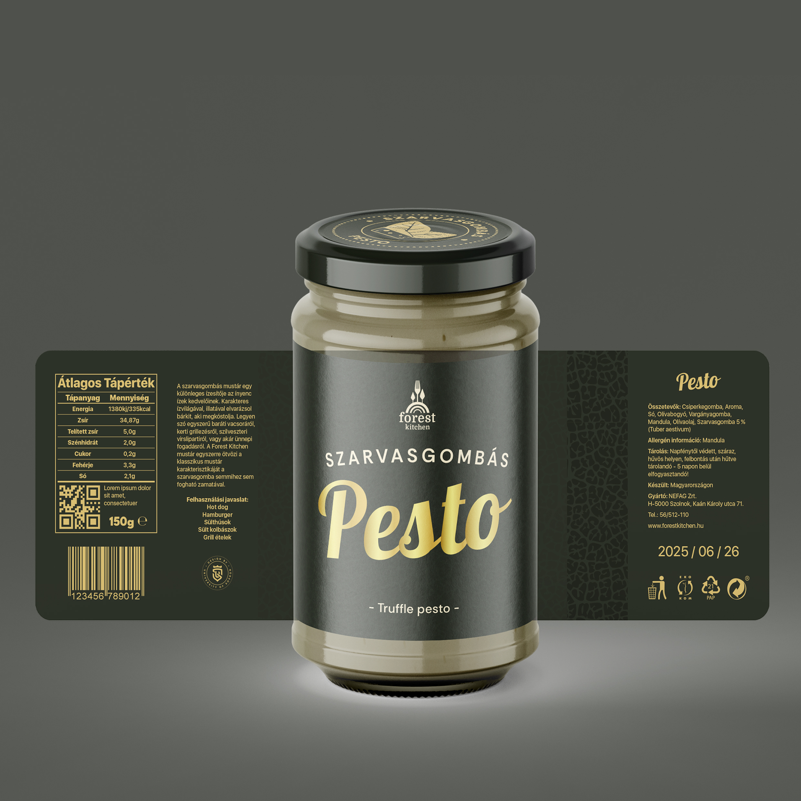
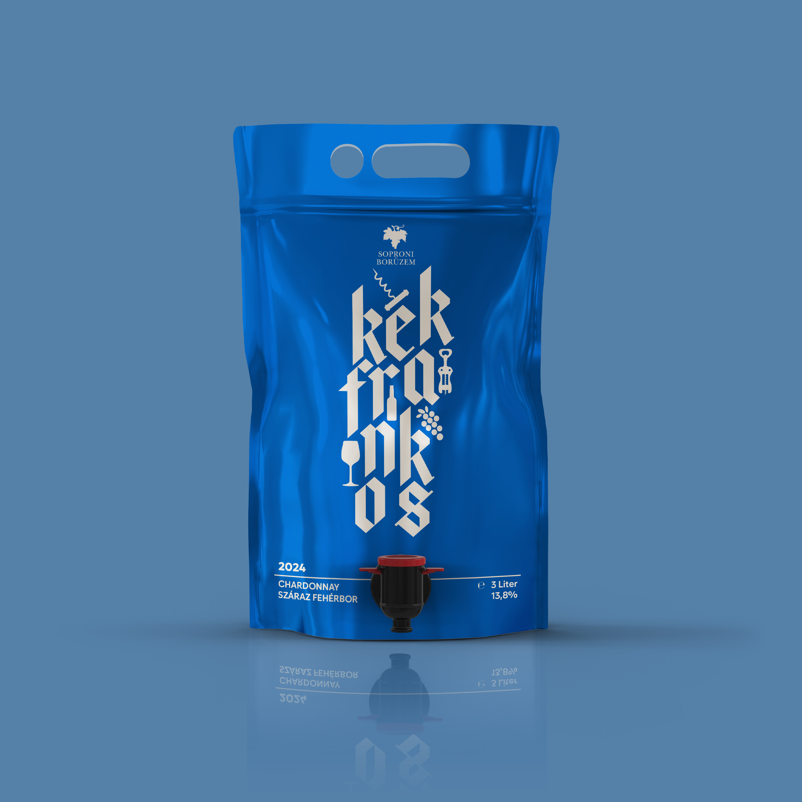

SynFlow - Neológ Kiállítás
Soproni Neológ Kiállítst bemutató arculat

Forest Kitchen - Csomagolás
A Forest Kitchen szarvasgombás termékeinek új stílusú csomagolásai.

Kreatív Boroscímke
Zacskós bor újra gondolt csomagolása